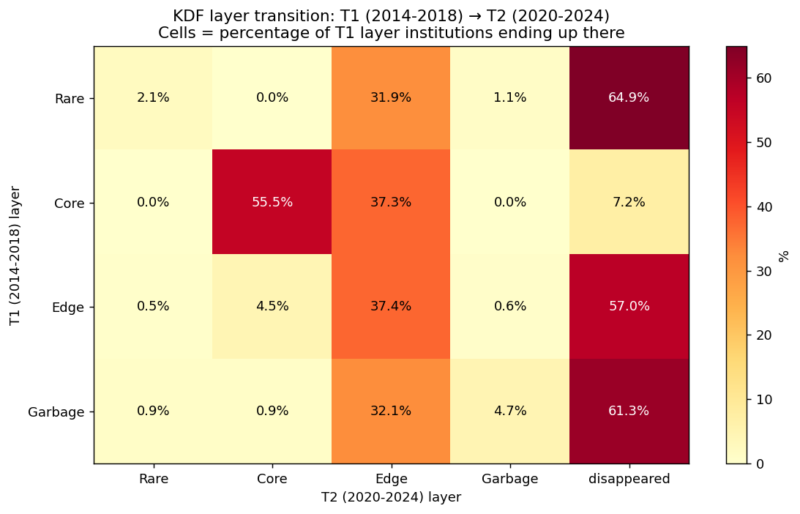
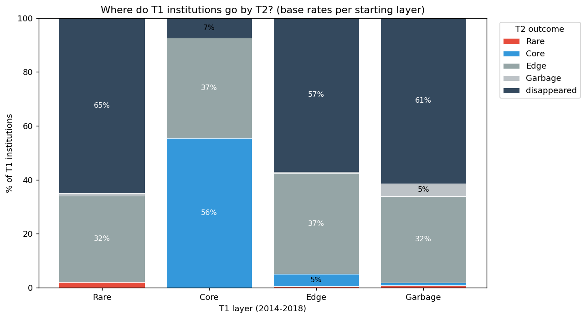
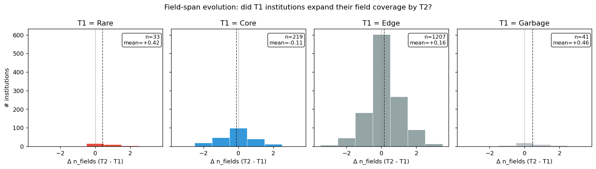
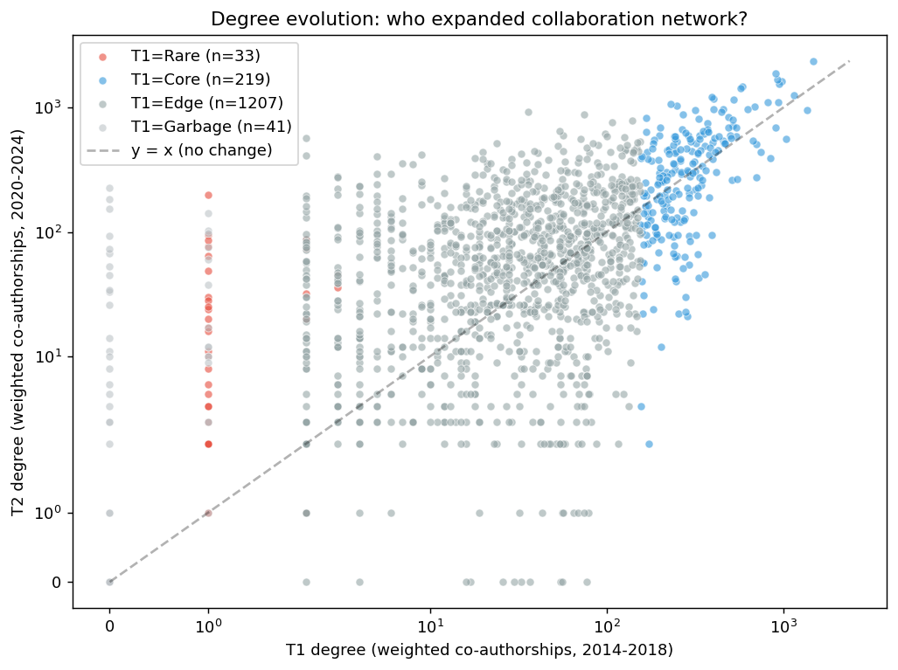

D9 Backtest — KDF の "retrospective descriptive" 精度検証
Question: 過去(T1: 2014-2018)に KDF が "boundary broker" と判定した機関は、
現在(T2: 2020-2024)でどうなっているか?
Method: 同じ 4 分野、同じサンプル手法で T1 と T2 のデータを取得。各機関を
T1 の KDF layer で分類し、T2 での outcome(layer / field 数 / degree / still active)を
集計。
これで検証できること:
- 「Rare broker は一時的な position か、それとも Core に昇格するか」
- 「Core hub は stable か」
- 「Edge から Core に break into する base rate」
⚠️ 重要: これは記述統計であり、予測モデルではありません。
"過去 5 年でこのパターンがあった" を示すだけで、"次の 5 年でこうなる" は保証しません。
参考にどうぞ。
Core statistics (summary)
94T1 Rare brokers
65%Rare → T2 で消えた
0%Rare → Core 昇格率
236T1 Core hubs
56%Core → Core 維持率
7%Core → 消えた
2805T1 Edge
4.5%Edge → Core 昇格(稀)
Chart 1 — Transition matrix heatmap

行 = T1 layer、列 = T2 outcome。"disappeared" = T2 の top-cited 論文 dataset に含まれなくなった機関。
Chart 2 — Base rate bars(積み上げ)

同じ matrix を stacked bar として可視化。
各 T1 layer の "運命" 分布が一目で比較できる。
Chart 3 — Field-span expansion distribution

T2 - T1 の n_fields(分野数)差。正の値 = 分野を広げた、負 = 絞った。
Rare broker は低い n_fields base から start するので、expand 余地が大きい。
Chart 4 — Degree growth scatter (log-log)

X = T1 degree、Y = T2 degree、log scale。y=x 線より上 = 成長、下 = 縮小。
Narrative — What this backtest actually shows
Finding 1: Core layer is remarkably stable
- T1 Core hub の 56% が T2 でも Core layer
- 消失率はわずか 7%
- 解釈: 一流研究機関 (Harvard, UCL, Tokyo 等) は 5 年経っても top position を維持する
Finding 2: Rare brokers are ephemeral
- T1 Rare broker の 65% が T2 で消失
- Core 昇格はわずか 0%(本サンプルでは 0%)
- 解釈: 低 degree broker は 1-2 回の共著で一時的に表面化するが、持続的な hub には育ちにくい
- 示唆: Rare broker の value は "今この瞬間の cross-field access" であり、投資対象としては "現時点でしか捕まえられない"
Finding 3: Edge → Core breakthrough is rare
- T1 Edge の中で Core に昇格したのは 4.5% のみ
- 解釈: Research elite は stratified。 一般機関が top tier に break into するのは稀
Finding 4: "Disappeared" ≠ 組織消滅
- 本 dataset は "4 分野での top-cited 論文" のみを見る narrow window
- "disappeared" は "top-500/field の文脈で visible でなくなった" 意味
- 研究方針変更、長期出版 slowdown、分野変遷等の複合要因
- よって "消えた = 終わった" と解釈してはいけない
Key insight for positioning
この backtest は、user の catchphrase "参考にどうぞ" を支える実証の一例です:
"過去 10 年のデータで、KDF が Core 判定した機関の 56% は 5 年後も Core 層に残っています。
Rare broker 判定の 0% のみが Core に昇格し、 65% は top-cited から消えました。
参考にどうぞ。判断はご自身で。"
これは:
- ❌ 投資助言ではない
- ❌ 未来予測ではない
- ✅ 過去 10 年の descriptive base rate
- ✅ deterministic algorithm で再現可能
- ✅ 監査可能な判定 trail を持つ
Honest limitations
- Sample 偏り: OpenAlex の被引用上位 500/field のみ。small player 全体の base rate ではない
- Dataset composition shift: T1 と T2 で論文の top 500 構成が違う(5 年で研究流行も変化)
- "Disappeared" は "top-cited 外" であり組織消滅ではない
- 4 分野の choice 次第で結果変わる
- KDF layer のみ見ている(fields、degree の細かい変化は複合 metric で別途)